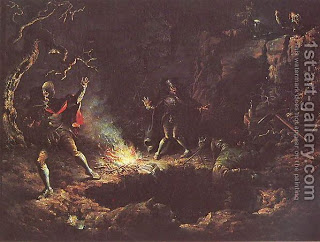

Bava Kamma 53 - A Man and An Ox Together Push another Ox into a Pit
If a worker digs a pit, he, and not his employer, is liable for the damages - because "there is no messenger for transgression" and it is forbidden to create damaging obstacles in the public domain.
If someone pushes an ox into a pit, or startles the animal and it falls, the owner of the pit is liable for whatever can't be collected from the first man.
If an ox and a person together push either a person or an animal or utensils into a pit, all of them (the person, the ox and the pit) are liable for damages, but only a person is liable for the " four payments ."